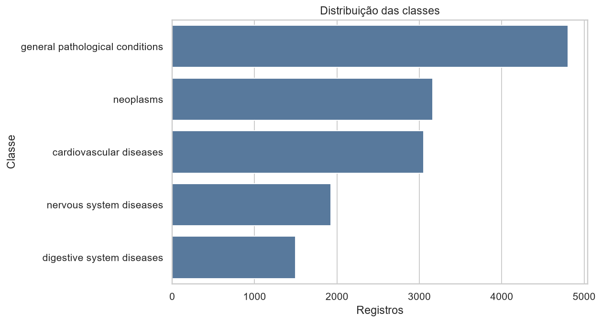
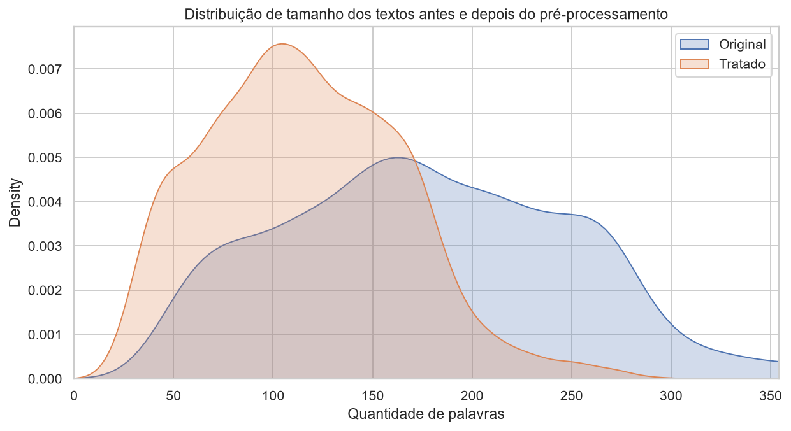
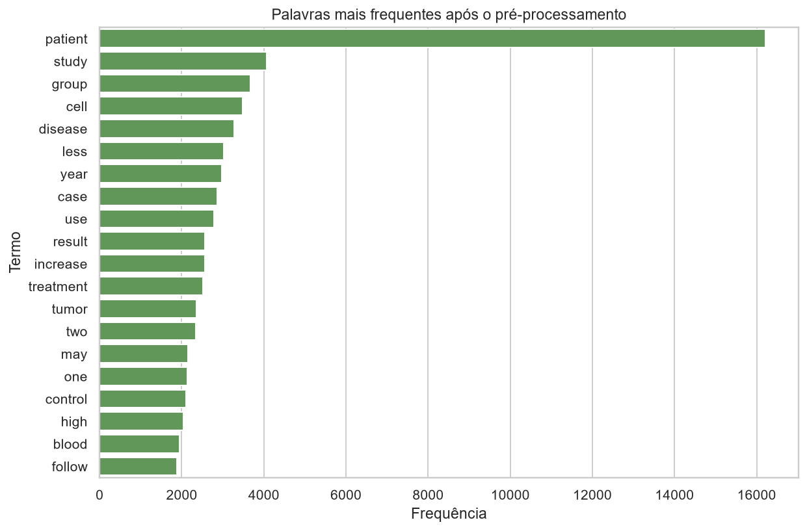
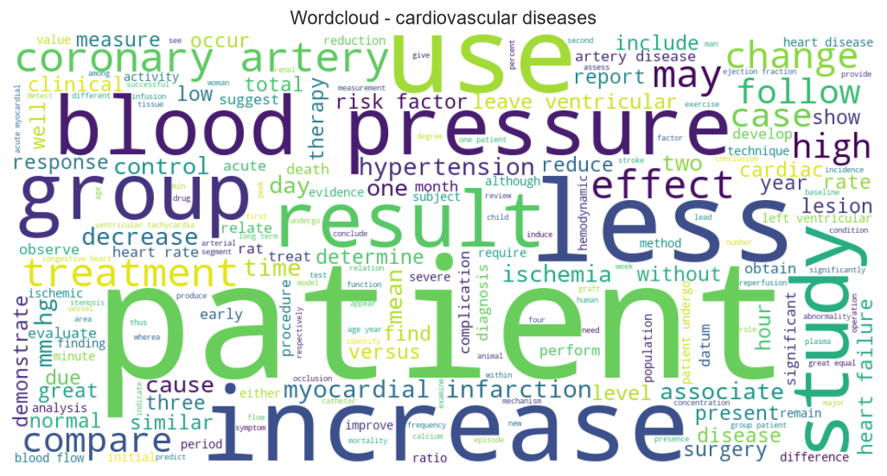
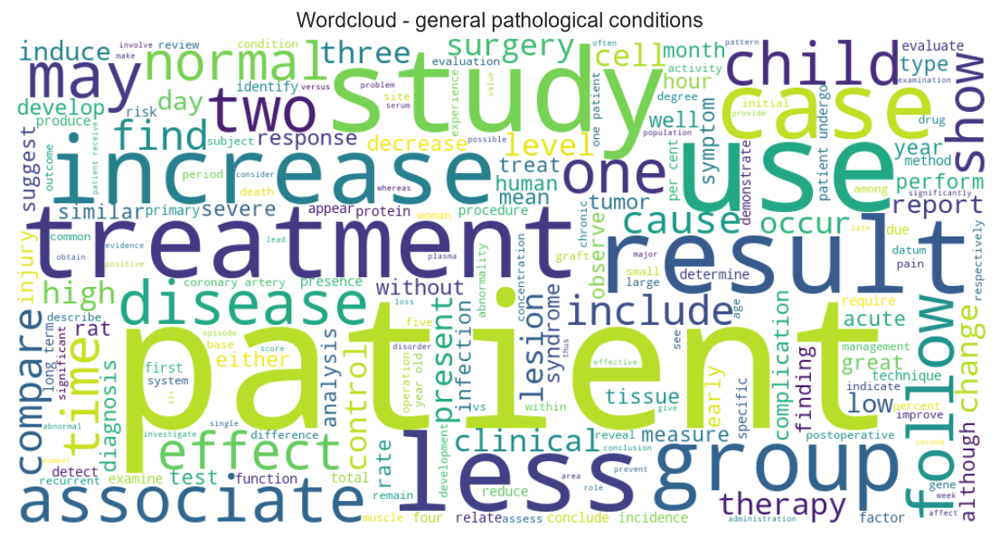
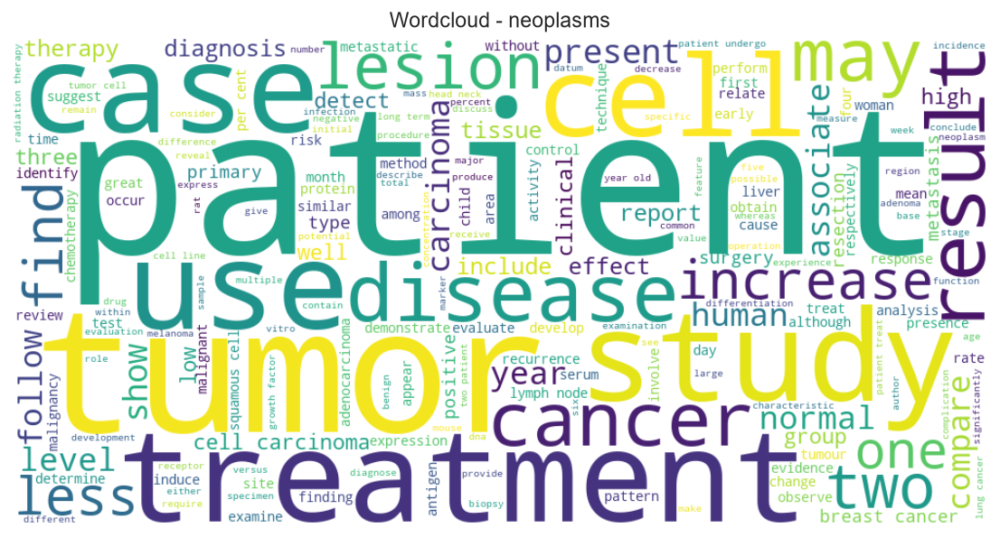
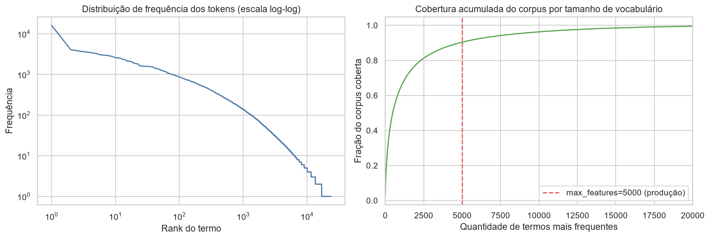
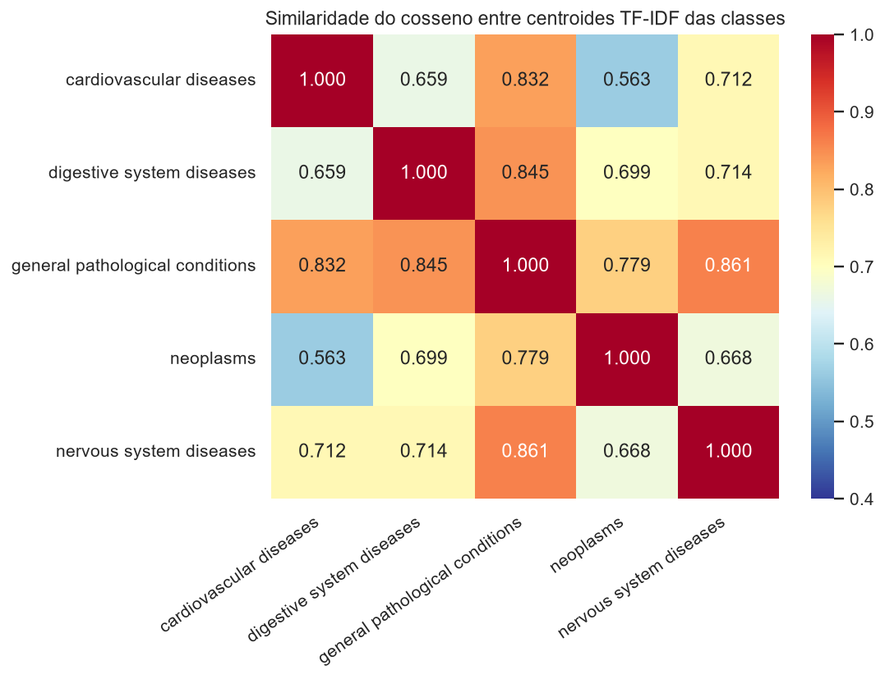
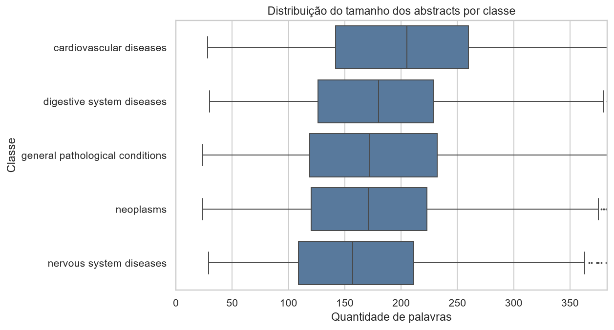

Relatório exploratório. O dataset é composto por abstracts médicos públicos e deve ser tratado como proxy acadêmico, não como validação clínica.
Origem: Medical Abstracts TC Corpus (Kaggle). A base contém abstracts médicos rotulados por condição.
| classe | registros | proporcao |
|---|---|---|
| general pathological conditions | 4805 | 0.332802 |
| neoplasms | 3163 | 0.219075 |
| cardiovascular diseases | 3051 | 0.211317 |
| nervous system diseases | 1925 | 0.133329 |
| digestive system diseases | 1494 | 0.103477 |

A tarefa foi enunciada como classificação multiclasse, com uma condição por texto. A seção 4 deste relatório mostra por que essa formulação se sustenta apenas parcialmente.
| checagem | valor |
|---|---|
| linhas | 14438 |
| colunas | 7 |
| textos nulos | 0 |
| alvos nulos | 0 |
| textos vazios | 0 |
| textos muito curtos (< 20 caracteres) | 0 |
| duplicidades totais (linha inteira) | 0 |
| duplicidades por texto | 3211 |
| duplicidades por texto e classe | 0 |
| classes sem nome após o merge | 0 |
A base não tem nulos, vazios ou classes órfãs. A anomalia relevante está nas duplicidades: milhares de textos repetidos, mas zero pares (texto, classe) repetidos.
O corpus é originalmente multirrótulo e foi distribuído em formato achatado — uma linha por par (abstract, condição).
| rotulos_distintos_por_abstract | abstracts | percentual |
|---|---|---|
| 1 | 8298 | 73.9 |
| 2 | 2653 | 23.6 |
| 3 | 270 | 2.4 |
| 4 | 6 | 0.1 |
| rotulo_a | rotulo_b | abstracts_em_comum |
|---|---|---|
| cardiovascular diseases | general pathological conditions | 870 |
| general pathological conditions | neoplasms | 619 |
| digestive system diseases | general pathological conditions | 603 |
| general pathological conditions | nervous system diseases | 591 |
| digestive system diseases | neoplasms | 204 |
| cardiovascular diseases | nervous system diseases | 197 |
| neoplasms | nervous system diseases | 190 |
| cardiovascular diseases | neoplasms | 101 |
| cardiovascular diseases | digestive system diseases | 68 |
| digestive system diseases | nervous system diseases | 56 |
| classe | abstracts | pct_tambem_com_outro_rotulo |
|---|---|---|
| digestive system diseases | 1494 | 53.2 |
| general pathological conditions | 4805 | 50.2 |
| nervous system diseases | 1925 | 45.5 |
| cardiovascular diseases | 3051 | 35.7 |
| neoplasms | 3163 | 30.6 |
Normalização unicode, minúsculas, remoção de pontuação, remoção de stopwords via NLTK e lematização com spaCy. Números foram preservados por poderem carregar informação clínica.
| original_words | clean_words | |
|---|---|---|
| count | 6000.00 | 6000.00 |
| mean | 179.66 | 115.55 |
| std | 76.16 | 49.38 |
| min | 26.00 | 17.00 |
| 25% | 122.00 | 78.00 |
| 50% | 175.00 | 113.00 |
| 75% | 234.00 | 150.25 |
| max | 528.00 | 340.00 |


| termo | frequencia |
|---|---|
| patient | 16207 |
| study | 4064 |
| group | 3679 |
| cell | 3474 |
| disease | 3276 |
| less | 3018 |
| year | 2976 |
| case | 2869 |
| use | 2783 |
| result | 2569 |
| increase | 2557 |
| treatment | 2515 |
| tumor | 2362 |
| two | 2337 |
| may | 2144 |
| one | 2137 |
| control | 2096 |
| high | 2048 |
| blood | 1941 |
| follow | 1876 |



| metrica | valor |
|---|---|
| Tokens totais | 693,314 |
| Vocabulário (tokens únicos) | 23,720 |
| Type-token ratio | 0.0342 |
| Hapax legomena (frequência 1) | 6,805 (28.7%) |
| Tokens por documento (mediana) | 113 |
| top_n_termos | cobertura_do_corpus |
|---|---|
| 1000 | 0.6448 |
| 3000 | 0.8394 |
| 5000 | 0.9037 |
| 10000 | 0.9629 |
| 20000 | 0.9946 |

Os 5.000 termos mais frequentes cobrem cerca de 90% do corpus, validando empiricamente o max_features=5000 do pipeline de produção.
| classe | termo | freq_na_classe | lift |
|---|---|---|---|
| cardiovascular diseases | chd | 36 | 4.24 |
| cardiovascular diseases | doxazosin | 51 | 4.24 |
| cardiovascular diseases | sestamibi | 26 | 4.24 |
| cardiovascular diseases | chf | 44 | 4.15 |
| cardiovascular diseases | reinjection | 34 | 4.12 |
| cardiovascular diseases | dahl | 30 | 4.10 |
| cardiovascular diseases | atenolol | 33 | 4.00 |
| cardiovascular diseases | enalapril | 42 | 3.96 |
| digestive system diseases | dissolution | 30 | 9.69 |
| digestive system diseases | capd | 33 | 9.41 |
| digestive system diseases | gallstone | 84 | 8.31 |
| digestive system diseases | omeprazole | 31 | 7.33 |
| digestive system diseases | dysphagia | 48 | 7.27 |
| digestive system diseases | anorectal | 26 | 7.00 |
| digestive system diseases | colitis | 97 | 6.91 |
| digestive system diseases | peritonitis | 83 | 6.82 |
| general pathological conditions | src | 47 | 3.07 |
| general pathological conditions | oxy | 26 | 3.07 |
| general pathological conditions | iddm | 25 | 2.74 |
| general pathological conditions | osteomyelitis | 34 | 2.74 |
| general pathological conditions | exon | 31 | 2.72 |
| general pathological conditions | cesarean | 36 | 2.69 |
| general pathological conditions | mutant | 43 | 2.69 |
| general pathological conditions | pneumothorax | 31 | 2.64 |
| neoplasms | bm | 28 | 4.66 |
| neoplasms | scc | 40 | 4.66 |
| neoplasms | mammography | 51 | 4.66 |
| neoplasms | b72 | 28 | 4.66 |
| neoplasms | psa | 47 | 4.66 |
| neoplasms | carcinomas | 31 | 4.51 |
| neoplasms | mammographic | 34 | 4.40 |
| neoplasms | lak | 29 | 4.36 |
| nervous system diseases | spasticity | 29 | 8.04 |
| nervous system diseases | tourette | 26 | 7.72 |
| nervous system diseases | aphasia | 25 | 7.17 |
| nervous system diseases | achr | 25 | 7.17 |
| nervous system diseases | migraine | 99 | 6.05 |
| nervous system diseases | movement | 110 | 6.02 |
| nervous system diseases | cognitive | 62 | 5.66 |
| nervous system diseases | meningitis | 68 | 5.60 |
| bigrama | peso_tfidf |
|---|---|
| year old | 76.342107 |
| blood pressure | 71.952191 |
| long term | 71.669983 |
| less 05 | 63.854504 |
| coronary artery | 63.078059 |
| per cent | 62.209883 |
| patient undergo | 61.747795 |
| case report | 58.506062 |
| report case | 56.760210 |
| two patient | 51.537473 |
| risk factor | 50.078598 |
| one patient | 49.206368 |
| less 001 | 48.077024 |
| magnetic resonance | 46.961827 |
| cell carcinoma | 46.788322 |

Similaridade média entre classes distintas: 0.733. As classes não são lexicalmente disjuntas, o que confirma pelo conteúdo o que a seção 4 mostrou pela estrutura dos rótulos.

| source_split | condition_name | kaggle_test | kaggle_train | diferenca_pp |
|---|---|---|---|---|
| cardiovascular diseases | 0.2112 | 0.2113 | -0.01 | |
| digestive system diseases | 0.1035 | 0.1035 | 0.00 | |
| general pathological conditions | 0.3328 | 0.3328 | 0.00 | |
| neoplasms | 0.2192 | 0.2190 | 0.02 | |
| nervous system diseases | 0.1333 | 0.1333 | 0.00 |
Treino e teste oficiais são estatisticamente equivalentes; não há drift de distribuição a corrigir.
| biblioteca | versao |
|---|---|
| python | 3.11 |
| pandas | 3.0.5 |
| numpy | 2.4.6 |
| scikit-learn | 1.7.2 |
| matplotlib | 3.11.1 |
| seaborn | 0.13.2 |
| nltk | 3.10.3 |
| spaCy | 3.8.16 |
| spaCy model | en_core_web_sm |
O notebook evita exibir textos completos em massa e usa exemplos truncados. Em dados reais de hospital, seriam necessários mascaramento de informações sensíveis, controle de acesso, revisão jurídica e validação clínica antes de qualquer uso operacional.